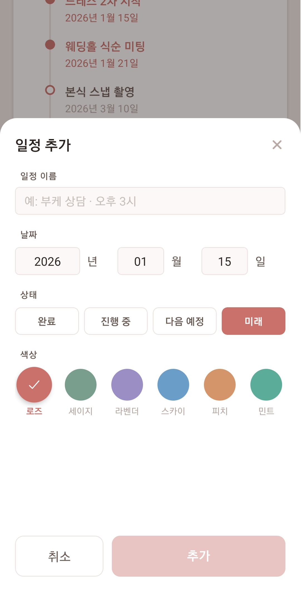
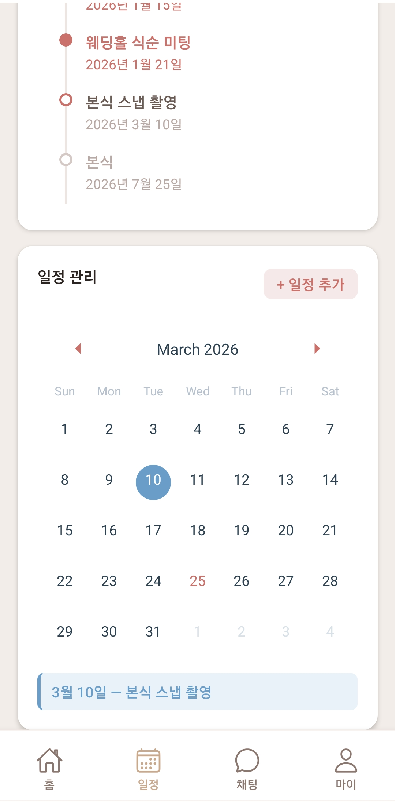
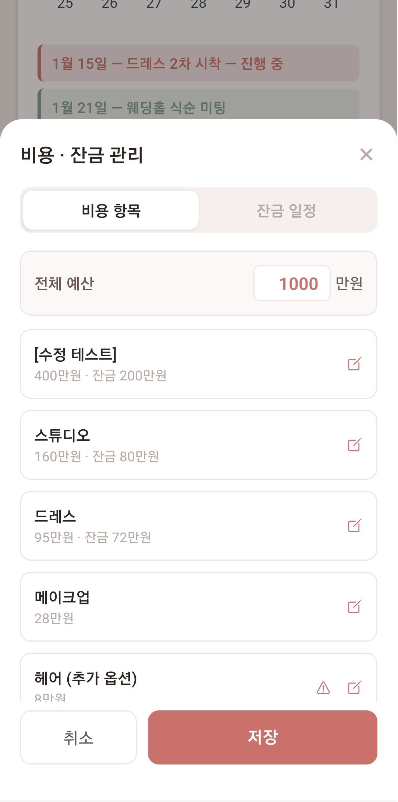

작업 목록 전체
| # | 작업 내용 | 파일 |
|---|---|---|
| 1 | 타임라인 수정 기능 추가 | timeline.jsx |
| 2 | 날짜 입력 방식 개선 (분리 입력) | timeline.jsx |
| 3 | 달력 일정 추가 모달 구현 | timeline.jsx |
| 4 | 6가지 색상 팔레트 확장 | timeline.jsx |
| 5 | 월별 일정 필터링 | timeline.jsx |
| 6 | 타임라인·달력 데이터 통합 (3→1 상태) | timeline.jsx |
| 7 | 비용·잔금 관리 모달 구현 | timeline.jsx |
| 8 | 타임라인 도트 색상 규칙 통일 | timeline.jsx |
| 9 | 버그 수정 2건 | timeline.jsx |
| G1 | Git: 브랜치 push 시 폴더 소실 문제 | — |
| G2 | Git: PowerShell 괄호() 경로 인식 오류 | — |
| G3 | Git: not a git repository 에러 | — |
| 10 | 로그인 버튼 그라데이션 적용 | login.jsx |
| 11 | 로그인 버튼 그림자 적용 | login.jsx |
| 12 | Lottie JSON 색상 교체 | Animated_leaves.json |
| 13 | Lottie 애니메이션 로그인 화면 적용 | login.jsx |
| 14 | 가입하기 버튼 그라데이션 적용 | register.jsx |
| 15 | 이메일 인증 커스텀 모달 구현 | register.jsx |
timeline.jsx
1. 타임라인 수정 기능 추가

기존 화면에는 타임라인 항목을 수정할 수 있는 기능이 없었습니다. 수정
모달(TimelineEditModal)을 추가하여 인라인 편집이
가능하도록 구현했습니다.
- 타임라인 카드 헤더에 수정 버튼 추가
- 수정 버튼 클릭 시 바텀 시트 형태의 모달 표시
- 모달 내에서 항목 클릭 → 인라인 편집 (이름, 날짜, 상태)
- 항목 삭제 기능 및 새 일정 추가 기능
- 저장 시 날짜순 자동 정렬 / 취소 시 변경사항 미반영
EditModal 컴포넌트 명세
-
props:
visible,items,onClose,onSave -
내부 state:
draft(편집 중인 항목 배열),openIdx(현재 펼쳐진 항목 인덱스) -
모달이 열릴 때마다
items를 복사하여draft초기화 (useEffect)
2. 날짜 입력 방식 개선
기존 텍스트 자유 입력 방식에서 연/월/일 숫자 전용 분리 입력 방식으로 변경했습니다.
// 변경 전 { id, label, date: "2026년 1월 15일", status } // 변경 후 { id, label, dateYear: "2026", dateMonth: "01", dateDay: "15", status }
헬퍼
const formatDate = (item) => { if (!item.dateYear) return item.date ?? ''; return `${item.dateYear}년 ${parseInt(item.dateMonth)}월 ${parseInt(item.dateDay)}일`; };
const sorted = [...draft].sort((a, b) => { const toMs = (i) => new Date( parseInt(i.dateYear) || 0, (parseInt(i.dateMonth) || 1) - 1, parseInt(i.dateDay) || 1 ).getTime(); return toMs(a) - toMs(b); });
3. 달력 일정 추가 모달 구현

달력 카드 헤더에 "+ 일정 추가" 버튼을 추가하고, 모달을 통해 일정을 등록할 수 있도록 구현했습니다.
- 달력 헤더에 "+ 일정 추가" 버튼 추가 (기존 수정 버튼과 동일한 스타일)
- 일정 이름, 날짜(년/월/일), 상태, 색상 입력 폼 구성
- 달력에서 날짜를 선택하면 모달에 날짜가 자동으로 채워짐
- 필수 항목 미입력 시 추가 버튼 비활성화
- 색상 선택에 따른 실시간 미리보기 제공
4. 6가지 색상 팔레트 확장
기존 로즈/세이지 2가지에서 6가지 색상으로 확장했습니다. 원형 스와치 UI로 교체했습니다.
선택 시 체크마크 + 그림자 + 약간 확대 인터랙션
선택된 색상의 라벨 텍스트가 해당 색으로 강조됨
—
—
—
—
5. 월별 일정 필터링
달력의 월을 이동하면 해당 월의 일정만 아래 배지 목록에 표시되도록 수정했습니다.
-
Calendar onMonthChange콜백으로visibleMonth상태 추적 -
이벤트 목록을
visibleMonth기준으로 필터링 후 날짜순 정렬 - 해당 월에 일정이 없을 경우 "N월에 등록된 일정이 없습니다" 안내 문구 표시
6. 타임라인·달력 데이터 통합
기존에 별도로 관리되던 3개의 상태를 timelineItems 단일
소스로 통합했습니다.
timelineItems(별도 상태)scheduleEvents(별도 상태)markedDates(별도 상태)
-
timelineItems— 단일 소스(Single Source of Truth) markedDates→ 파생(computed)visibleEvents→ 파생(computed)
7. 비용·잔금 관리 모달 구현

기존 하드코딩된 비용/잔금 데이터를 통합 상태로 관리하고, 수정 모달을 구현했습니다.
COST_ITEMS + BALANCE_ITEMS →
INITIAL_COST_ITEMS 단일 배열로 통합.
hasBalance 필드로 잔금 여부 관리
hasBalance: true 항목만 표시. 수정 링크로 비용 항목
탭의 해당 항목으로 바로 이동
costItems에서 자동 계산 (하드코딩
제거)
8. 타임라인 도트 색상 규칙 통일
상태에 따라 도트 색상을 일관된 규칙으로 통일했습니다.
| 상태 | 도트 | 색상 코드 | 설명 |
|---|---|---|---|
done |
초록 채움 | #7A9E8E |
완료된 일정 |
active |
로즈 채움 | #C9716A |
현재 진행 중인 일정 |
next |
로즈 빈 원 | #C9716A (테두리) |
곧 다가올 일정 |
future |
회색 빈 원 | #D4C9C5 (테두리) |
먼 미래 일정 |
9. 버그 수정
| 버그 | 원인 | 해결 |
|---|---|---|
| SyntaxError: JSX 닫는 태그 중복 | </View> 태그 1개 중복 작성 |
중복 </View> 1개 제거 |
| 다른 달 일정이 현재 달에 표시 | 전체 이벤트 목록을 월 필터 없이 렌더링 | 월별 필터링(5번 작업)으로 해결 |
스타일 구조 참고 — styles: 메인 화면
컴포넌트용 스타일. modalStyles: TimelineEditModal
전용 스타일. 날짜 입력 관련 스타일(dateRow,
dateInput, dateInputSm,
dateSep)은 반드시 modalStyles에 위치.
사용 라이브러리 (timeline.jsx)
| 라이브러리 | 사용 컴포넌트 |
|---|---|
react-native |
View, Text, ScrollView, StyleSheet, TouchableOpacity, TextInput, Modal, Dimensions |
react-native-safe-area-context |
SafeAreaView |
@expo/vector-icons |
Ionicons |
react-native-calendars |
Calendar |
expo-router |
router |
Git 이슈 해결
G1. 브랜치 push 시 폴더가 사라지는 문제
design/#2-timeline-ui 브랜치에 push할 때마다
app/(couple)/chat 폴더가 사라짐
chat 폴더는 feat/#10-chat 브랜치에서
추가되었으나, design/#2 브랜치는 그 이전 커밋에서
분기되어 chat 폴더의 존재를 알지 못함
# 브랜치 구조 (분기 시점 기준) main A -- B -- C(chat 추가) -- D \ design/#2 E -- F ← 이 시점에는 chat 없음 # 진단 명령어 git log --oneline -- "app/(couple)/chat" git merge-base main design/#2-timeline-ui # 해결 — main 병합 git checkout design/#2-timeline-ui git merge main # 충돌 해결 후 커밋 및 push git add "app/(couple)/timeline.jsx" git commit -m "merge: main 병합 및 timeline UI 수정" git push origin design/#2-timeline-ui
merge 충돌 발생 시 VS Code에서 timeline.jsx 충돌을
해결합니다. Accept Current Change: 내
브랜치(design/#2) 내용 유지 (권장) /
Accept Incoming Change: main 내용으로 덮어씀.
G2. PowerShell에서 괄호() 경로 인식 오류
git add app/(couple)/timeline.jsx 실행 시
'couple' 용어가 인식되지 않습니다 에러 발생
()를 명령어 또는 표현식으로
해석하여 경로의 일부로 인식하지 못함
# ❌ 잘못된 방법 git add app/(couple)/timeline.jsx # ✅ 올바른 방법 — 경로 전체를 큰따옴표로 감싸기 git add "app/(couple)/timeline.jsx"
G3. not a git repository 에러
fatal: not a git repository (or any of the parent
directories): .git
Mongle-app)에 위치.
# 올바른 저장소 경로로 이동 후 실행 cd C:\workspace\mongle\mongle\Mongle-app git status
login.jsx · register.jsx
10. 로그인 버튼 그라데이션 적용
로그인 버튼에 expo-linear-gradient의
LinearGradient를 적용하여 핑크에서 베이지 톤으로
이어지는 그라데이션을 구현했습니다.
npx expo install expo-linear-gradient
['#d6a6a6', '#d5d1b3'] (핑크 → 베이지) /
start: {"{x:0,y:0}"} end:
{"{x:1,y:1}"} (대각선)
<TouchableOpacity style={styles.loginBtnWrapper} activeOpacity={0.85}> <LinearGradient colors={['#d6a6a6', '#d5d1b3']} start={{ x: 0, y: 0 }} end={{ x: 1, y: 1 }} style={styles.loginBtnGradient} > <Text style={styles.loginBtnText}>로그인</Text> </LinearGradient> </TouchableOpacity>
11. 로그인 버튼 그림자 적용
LinearGradient 위에 그림자를 적용하기 위해 바깥
TouchableOpacity(wrapper)에 그림자 스타일을
추가했습니다.
LinearGradient가 아닌 바깥 wrapper에 적용.
shadowColor를 버튼 색상(#d6a6a6)에 맞춰 자연스러운
컬러 그림자 구현
shadow* 속성 / Android:
elevation 속성
shadow: { shadowColor: '#d6a6a6', shadowOffset: { width: 0, height: 4 }, shadowOpacity: 0.4, shadowRadius: 8, elevation: 6, }
12. Lottie JSON 색상 교체
LottieFiles 애니메이션의 색상을 Mongle 앱 디자인 톤에 맞게 교체했습니다. Lottie JSON은 RGB 값을 0~1 범위로 저장합니다.
| 레이어 | 원본 색상 | 교체 색상 | 적용 수 |
|---|---|---|---|
| 화분/돌맹이 | #b9571a |
#aaa2a1 |
5곳 |
| 줄기 (Stem) | #2d4245 |
#537663 |
6곳 |
| 잎/기타 | #662612 |
#e6bcb3 |
17곳 |
| 배경 (Bg) | #ffd69b |
#ede6e4 |
1곳 |
13. Lottie 애니메이션 로그인 화면 적용
색상 교체가 완료된 Animated_leaves.json을 로그인 화면
배경에 적용했습니다. StyleSheet.absoluteFill을 사용하여
화면 전체를 덮는 배경 애니메이션으로 구현했습니다.
npx expo install lottie-react-native
style={"{StyleSheet.absoluteFill}"}로 화면 전체
배경 덮음
style={"{[StyleSheet.absoluteFill, {left: N}]}"} —
숫자가 클수록 오른쪽으로 이동
<SafeAreaView style={styles.safeArea}> <LottieView source={require('./assets/Animated_leaves.json')} autoPlay loop style={[StyleSheet.absoluteFill, { left: 30 }]} /> {/* 기존 로그인 UI */} </SafeAreaView>
lottie-react-native 추가 후
npm install 시 react/react-dom 버전 충돌(ERESOLVE)
오류가 발생할 수 있습니다.
npm install --legacy-peer-deps로 해결하세요.
14. 가입하기 버튼 그라데이션 적용
로그인 버튼과 동일한 LinearGradient를 가입하기 버튼에도
적용했습니다. disabled 상태일 때는 흐린 색상으로 자동
전환됩니다.
isSignUpEnabled 값에 따라
활성/비활성 그라데이션 색상 분기
['#d6a6a6', '#d5d1b3'] (로그인 버튼과 동일)
['#e0d8d8', '#e0ded0'] (흐린 톤)
15. 이메일 인증 커스텀 모달
기존 Alert.alert 3곳을 커스텀 모달로 교체하여 앱
디자인과 통일된 UI를 적용했습니다.
modalVisible,
modalConfig state 추가.
showModal(title, message, onConfirm) 헬퍼 함수 구현
rgba(0,0,0,0.35).
borderRadius: 16, elevation: 8 (카드형 디자인).
확인 버튼: LinearGradient #d6a6a6 → #d5d1b3